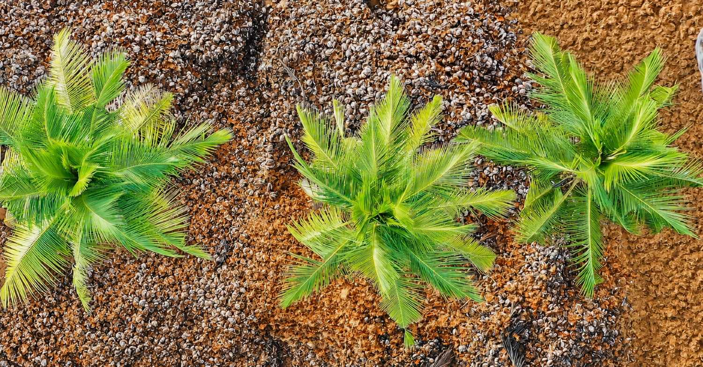
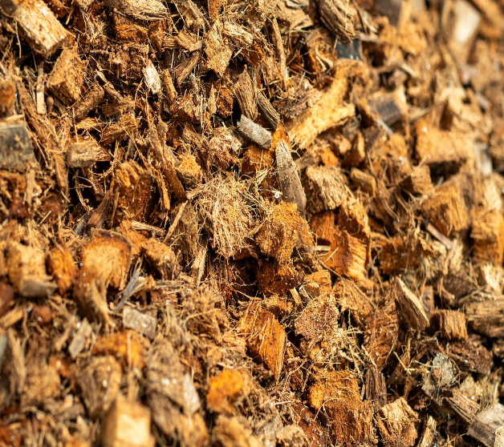
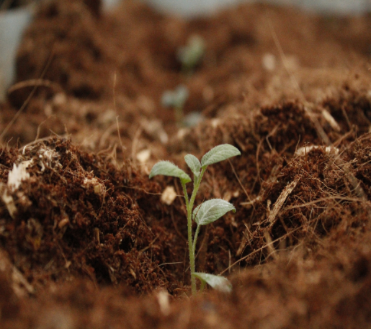
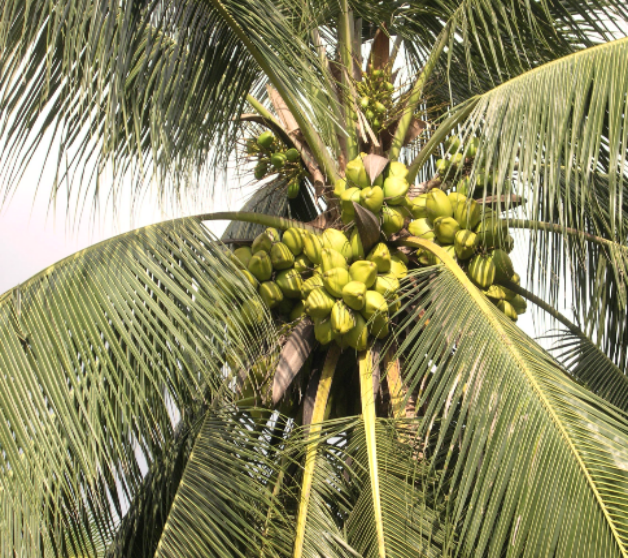

What is COCO
'Coco’ or ‘Coir’
- Terms either ‘Coir’ or ‘Coco’ are used commonly to describe coco peat and coco husk chips.
- Coco has other names such as coco pith, coco peat, coir fiber pith, coir fiber dust, coco chips, Cocos and husk chips.
- Coco pith is a byproduct of the coconut fiber extraction process.
- Coconut fiber is extracted from coconut husks using a mechanical process and thus extracted fiber has a range of applications such as manufacture of brushes, carpets, ropes, cushions and mattresses, etc.,.
- Coco peat mainly consists of spongy particles which hold the fiber together in the coconut husk.
- Coco chips or coconut husk chips are produced by cutting coconut husks into pieces of desired sizes and shapes and consists of fiber and coco peat bonded together..

Coco as a Substrate (Growing Medium)
- Depending on type of plants to be grown, coco peat or a mixture of coco peat and husk chips could be used as a superior growing media to substitute soil.
- Coco has been emerging as a strong competitor to conventional substrates such as Peat moss, Rockwool, Perlite, Wood shavings, etc., in Hydroponic Horticultural industry.

Why coco is unique?
- Coco is renewable which makes its use a totally environmental friendly process. Thanks to nature’s bounty, it stands out as a renewable growing medium.
- Its subsequent disposal after usage also does not creates environmental hazards because of its natural decomposing properties.
- It has a tremendous water holding capacity which is approximately eight to nine times of its weight.
- This property makes coco peat ideal for soil conditioning thus turning virtually unsuitable soils suitable for cultivation.
- Coco peat produces more breathing space and aeration for roots of the plants.
- The balanced water holding capacity and air filled porosity taken together makes coco peat one of the best substrates on the earth which gives superior root structures and root growth to plants.
- Also it has natural anti-fungal properties which help plants to resist against soil born diseases.
